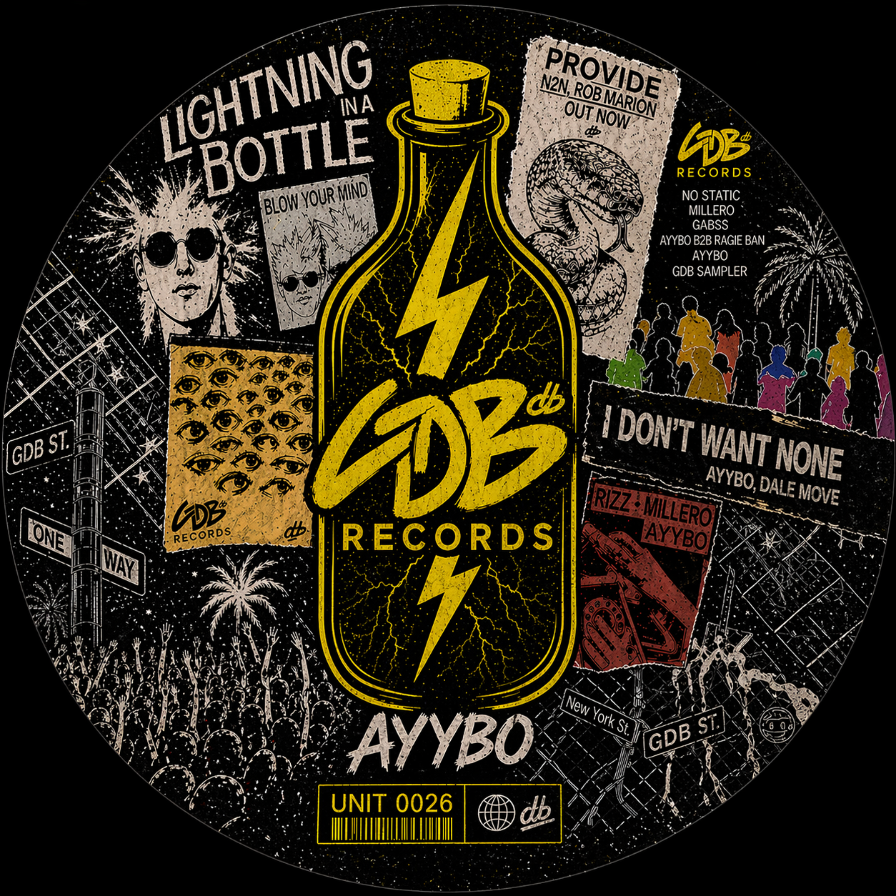

Culture & lore
Music and dance culture around AYYBO.
MORE WORLDS
AYYBO, music, dance culture, lore, and creative ideas.
Music and dance culture around AYYBO.
Club Science, LES, GDB U, and merch concepts are part of the room’s earlier outline. Released collections will be added when confirmed.

A personal collection of music culture, visual ideas, and fan-made studies. Artist names belong to their respective artists; this space does not claim label affiliation.